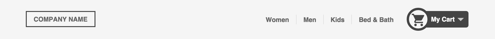
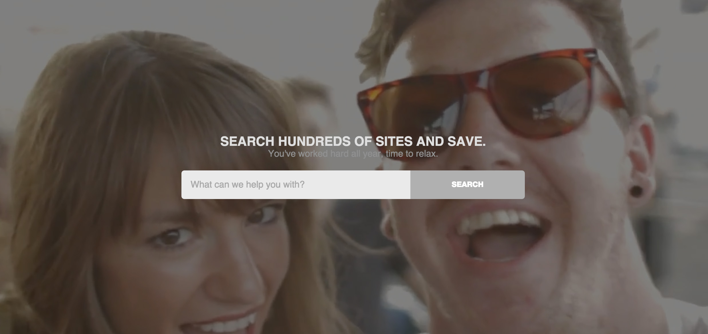
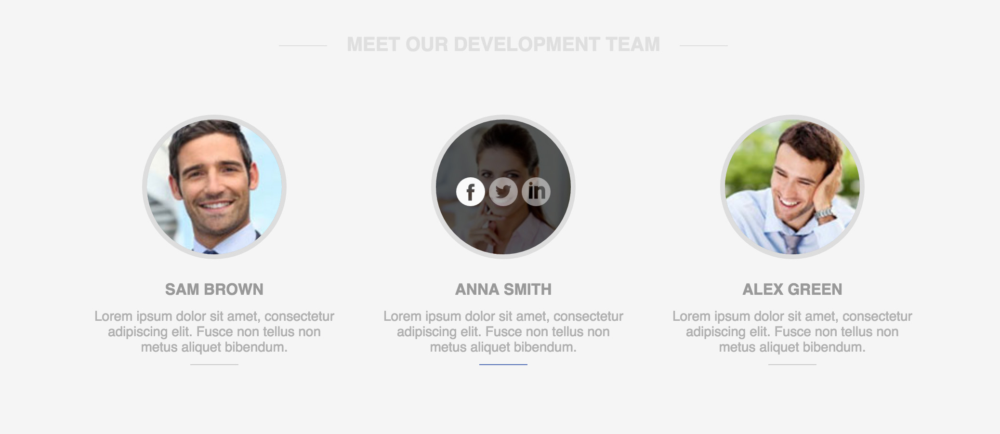
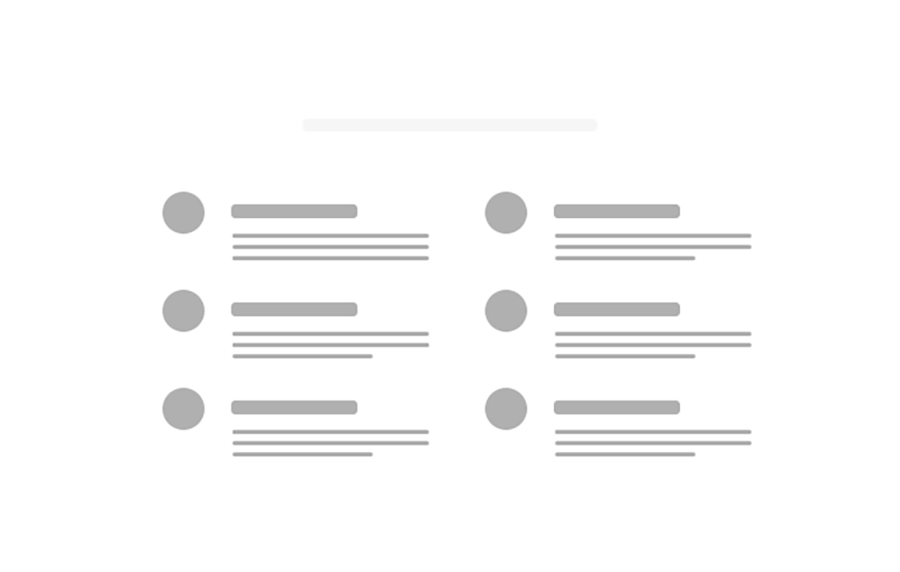
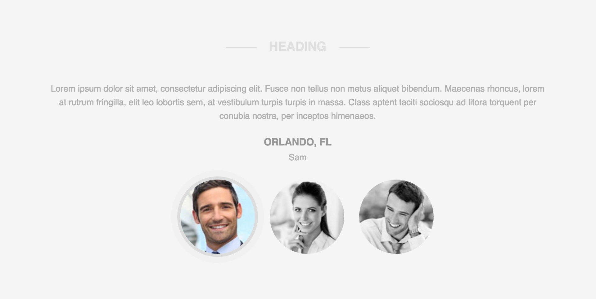
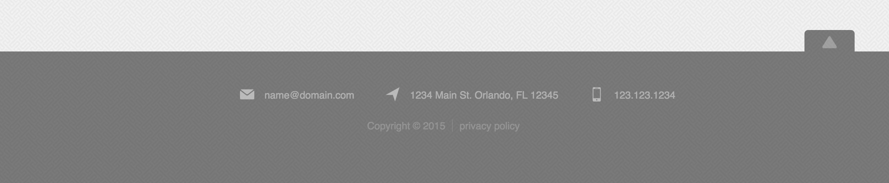

Header with Drop-down menu  View Example Resources MDN: HTML5 Header tag MDN: HTML5 Nav tag Line25: Pure CSS Dropdown Menu CSS Tricks: Clearfix CSS Tricks: CSS Triangles CSS Tricks: Zebra Striping
CTA with Background  View Example Resources MDN: HTML5 Section tag The New Code: Background Video W3C: Paragraphs in forms
Company Team Contact  View Example Resources MDN: HTML5 Article Tag CSS Tricks: ::after / ::before MDN: Attribute Selectors
Features List  View Example Resources MDN: Border Radius MDN: CSS Calc MDN: Media Queries Flaticon What the Font!
Testimonials  View Example Resources MDN: HTML blockquote tag MDN: CSS filter property CSS Tricks: On :target MDN: CSS animation
Sticky Footer  View Example Resources MDN: HTML5 dl Tag MDN: Email Links W3C: HTML Entities CSS Tricks: Sticky Footer Subtle Patterns